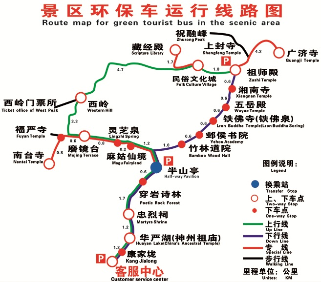
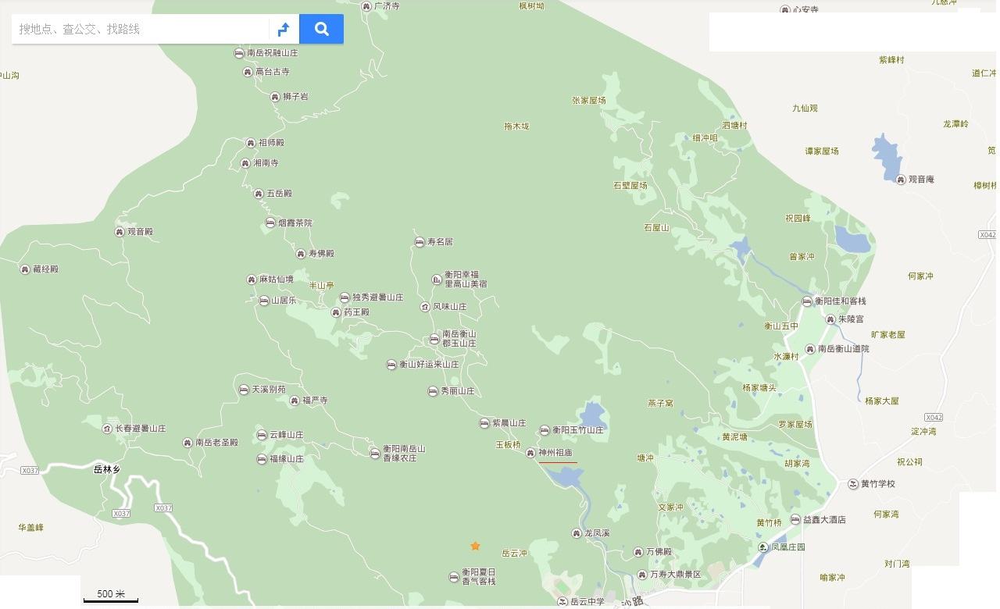
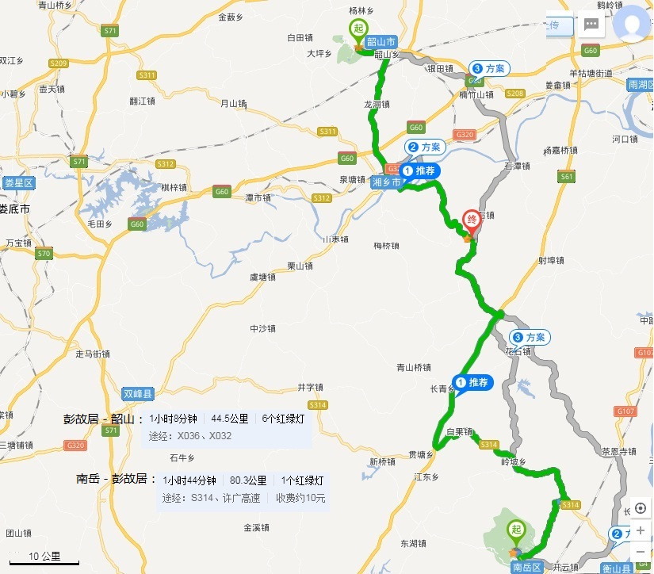
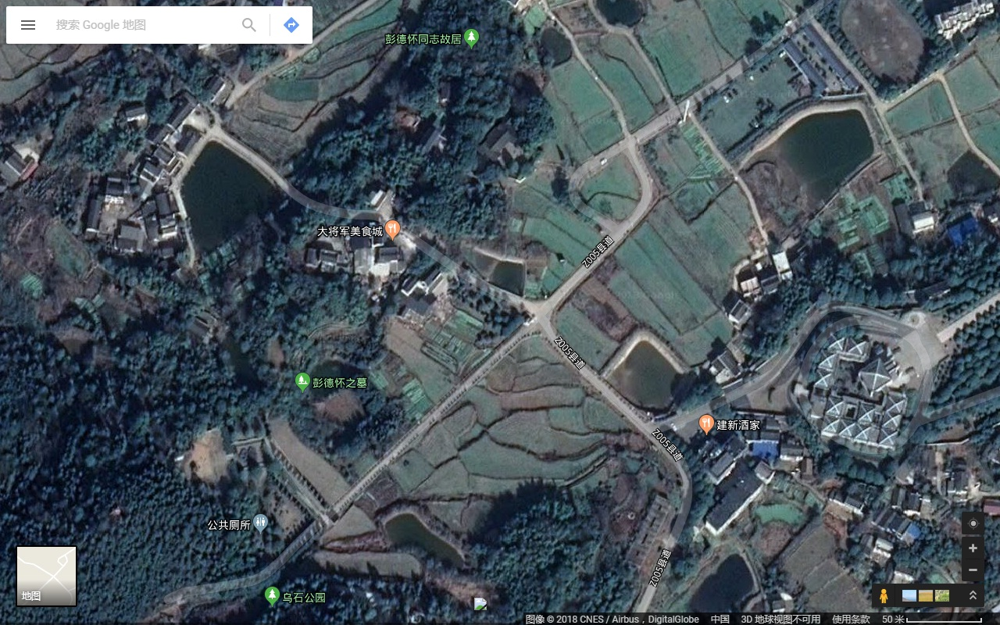
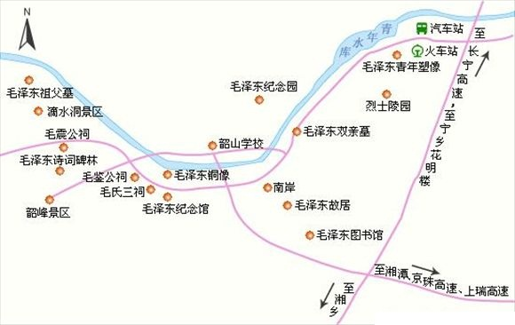
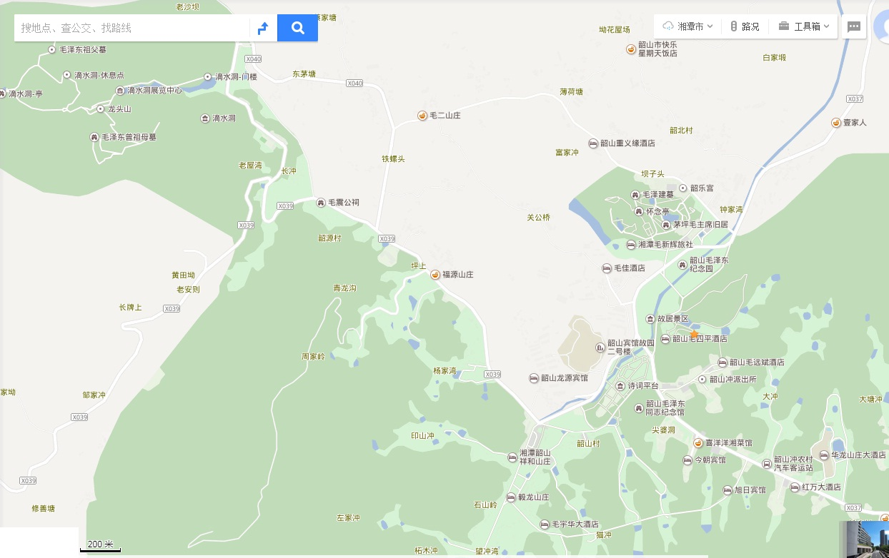
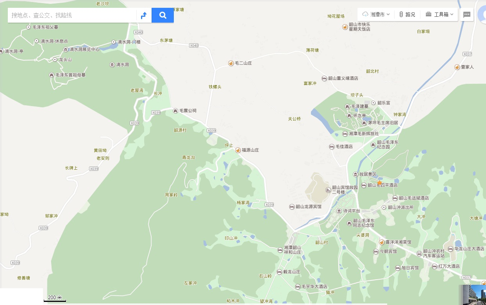

1 广州至衡山：高铁携程预订 12306 最好是提前两天订；
购票细节，12306的网站有时没响应，及安全提醒无法支付；在携程上购票的响应速度要快，且程序更简单：填写相关信息→12306帐户登录，wufuqun01,sixthreeWuhnfx→选座→支付；此时有时你选的F座并不是F座，此时可后退重新选座；购票成功后，12306和携程都会有短信提醒；G6110,5车7F号
退票费按如下规则核收：票面乘车站开车时间前15天（不含）以上不收取退票费，48小时以上的按票价5%计，24小时以上、不足48小时的 按票价10%计，不足24小时的按票价20%计。改签或变更到站后的车票乘车日期在春运期间的，退票时一律按开车时间前不足24小时标准核收退票费。应退款项按银行规定时限退还至购票时所使用的网上支付工具账户。
2 衡山 南岳衡山_南岳旅游官方网站
最高峰祝融峰海拔1300.2米。
景区内各景点之交通：
1、游客至南岳汽车站后，可乘坐景区内免费公交车到游客服务中心处购买进山门票和交通票上山。
2、中心景区内交通。
衡山景区内允许自驾车，门票好像是120元/台。
中心景区内交通，可选择步行或者乘坐景区内环保车。上行票(含索道)：45元、下行票(含索道)：45元、全程票(含索道)：80元
◎70岁以上老年人、军人、残疾人、中小学生（不含大专院校学生） 凭有效证件可以享受5折优惠。
运营时间： 06：00--18：00；（车索同步）、发车时间：淡季30分钟一趟（旺季20分钟），坐满提前发车。

3 彭德怀故居
彭德怀纪念馆位于湖南省湘潭乌石镇彭德怀故居对面的200米的卧虎山上，依山而建，与彭德怀故居遥相呼应，占地面积8公顷。
百米茶花大道是为了纪念彭德怀诞辰100周年而精心设计的。
彭德怀纪念馆内的百米长梯，总长100米，共132级，分别由两个九级和六个十九级组成。因为中国古代以单数为尊，而九是单数里最大的数。两旁的松柏营造了一种庄严肃穆的氛围。
 4 韶山 旅游团-韶山旅游攻略网 韶山旅游必读
故居、铜像和纪念馆都是免费的，只有滴水洞景区50元票价，毛泽东纪念园45元，不买还可以选择性游览。
韶山景区从2016年3月25日开始实行了交通换乘，来韶山的游客必须要换乘景区环保大巴才能进入景区，换乘车费20一人，景区里凭票随便坐。如果你是自驾游过来，不想坐景区的大巴，可以提前找景区里的饭店酒店各种单位提前办好车辆通行证（至少提前两个小时）就可以开车进入景区，当然，车票该买的还是要买，只是减少走路和等车的时间，另外，环保大巴的上班时间是上午七点半到下午五点多（以车票上所写时间为准）如果是晚上过来住，需提前联系好里面的酒店办好通行证才能进去。目前韶山已实行交通换乘管理，所有车辆都必须停在游客换乘中心，然后换乘旅游大巴进入景区。停车费不是很贵，20元/4小时。旅游旺季的时候，排队换乘的人特别多，难免会要耽误一些时间在这上面。所以有时候将车停在游客换乘中心也是一件很头痛的事情。
 

市内交通
韶山市内有环形公路联通各景点。汽车站与火车站至韶山冲毛泽东故居和滴水洞，从早晨6:00至下午7:30，均有公共汽车和中巴车往返，乘车约10分钟，套票10元，沿途经过韶山青年水库、毛泽东纪念园、故居、南岸、韶山宾馆、毛泽东铜像广场、韶山毛泽东同志纪念馆、韶山毛泽东图书馆、毛氏宗祠、滴水洞、毛震公祠和韶峰景区。
毛泽东故居
毛泽东故居位于韶山市韶山乡韶山村土地冲上屋场，坐南朝北，系土木结构的“凹”字型建筑，东边是毛泽东家，西边是邻居，中间堂屋两家共用。总建筑面积472.92平方米。主要景点是毛泽东故居、铜像广场、滴水洞。
毛泽东诗词碑林
毛泽东诗词碑林位于韶峰半山腰，距毛泽东故居约3公里，1991年动工兴建，1993年正式对外开放，总占地面积约2万平方米。
毛氏宗祠
毛氏宗祠是韶山毛氏家族的总祠堂，始建于1758年，1763年建成。建筑系砖木结构，青砖青瓦，建筑面积约700平方米。
毛泽东纪念园
毛泽东纪念园位于毛泽东故居西侧约500米的层山叠岭之上，纪念园最初定名为“毛泽东之路景园”。景园的构思显然受到了全国许多大城市“世界之窗”微缩景观的启示，整座景区建成只用了一年的时间，占地约二十万平方米，大小建筑近百处，集纪念、教育、游览等多种功能于一体。
毛泽东铜像
毛泽东铜像重3.7吨，像高6米，基座高4.1米，通高10.1米，象征着“10.1”国庆，更象征着毛泽东是新中国的缔造者。
滴水洞景区
滴水洞，位于韶山冲西边的角落里，与主席故居相距3公里。滴水洞天，是韶山风景中一个著名的景点群，由滴水幽壑、虎歇坪、龙头山等自然风光与滴水洞一号等建筑组成。
韶峰景区
韶峰有八景，即韶峰耸翠、仙女茅庵、胭脂古井、塔岭晴霞、石屋清风、顿石成门、凤仪亭址、石壁流泉。
凤仪亭址
相传舜帝南巡时，命在此演奏韶乐，美妙动听的音乐响起，瞬间百鸟和鸣，凤凰翩翩起舞。舜帝在九嶷山升天后，凤凰又飞回韶山。韶山的百姓便在凤凰栖身的梧桐树旁，修造了一座“凤仪亭”。如今，凤仪亭坐落在仙女庵的后面。
仙女茅庵
《毛氏族谱》中有《仙女庵记》记述仙女茅庵两种传说。仙女庵建造在韶峰半山腰上，如今草庐茅舍依旧，大门门楣上依稀可见庵名。
胭脂古井
传说舜帝二妃娥皇、女英在此路过，见一泉井，水平如镜，便对水梳妆，一不小心，胭脂掉落井中，顿时井水呈粉红色。胭脂古井即由此而来。
石屋清风
石屋，又称“玉石宫”，坐落在韶峰北侧的鳜鱼峰上。
顿石成门
此门相传为梦公所立。梦公为一道姑梦后所生。梦生子从小未见过也不知谁是他的生身父母，由一采药老人带养并供其习文练武。梦生子长大投军参战，立有战功后解甲归田，孝顺养父。一日，梦生子默念生身父母，跪拜天地，忽闻一声霹雳，他所站立的两块褐石猛涨数丈之高，撑天而立，有如天门。生母出现与养父相认，梦生子也在石门下拜见亲娘。顿石成门之景由此得来。
塔岭晴霞
传说韶峰旧时有一条专吃生灵精血的蜈蚣精，整日喷发毒雾，使得这一地区浮云阴沉、乌烟瘴气、不见天日，于是太乙真人用宝塔将它镇服，此后天空出现了美丽的彩霞。此塔位于韶峰南山腰，塔岭晴霞因此得名。
石壁流泉
韶峰东面有一处瀑布，人称石壁流泉。相传是鱼龙女凿石引泉而得名。
黑石寨景区
黑石寨景区位于韶山风景名胜区北部，景区内群山起伏，绿水滢滢，植被丰富。景区内有青沟里水库、红旗水库、韶山鹿场、杨林鹿场、黑石寨等景点。境内景区最高海拔500.9m，最低海拔118.8m，总面积30平方公里。
狮山山景区
狮子山景区位于韶山风景名胜区的东部，有如意亭、大塘湾、板凳岭、坪顶岭、燕子洞、四仙抬宝、雄狮吞日、乳桐庙等景点。
5 return